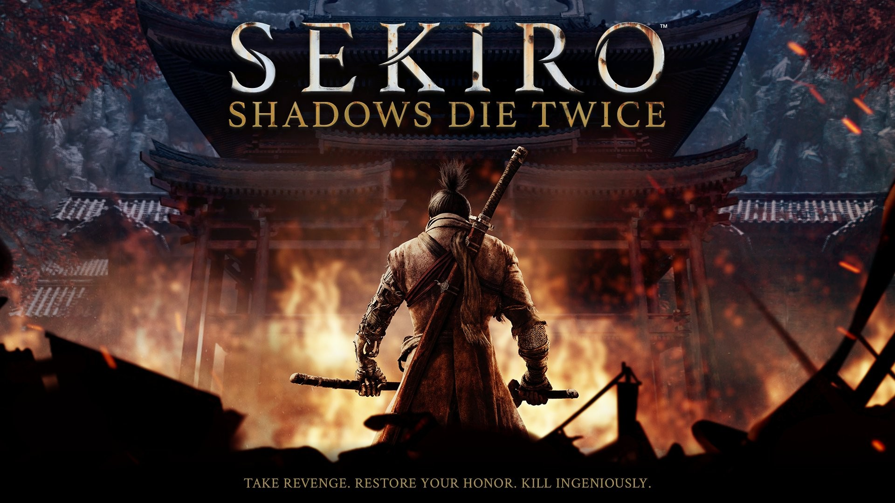
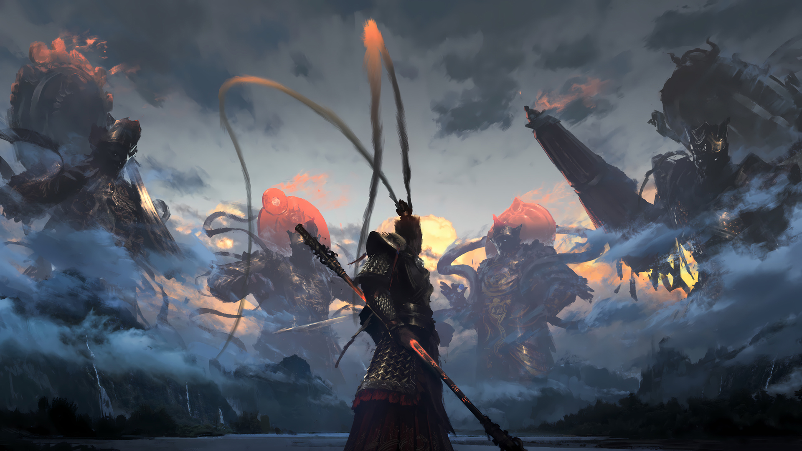
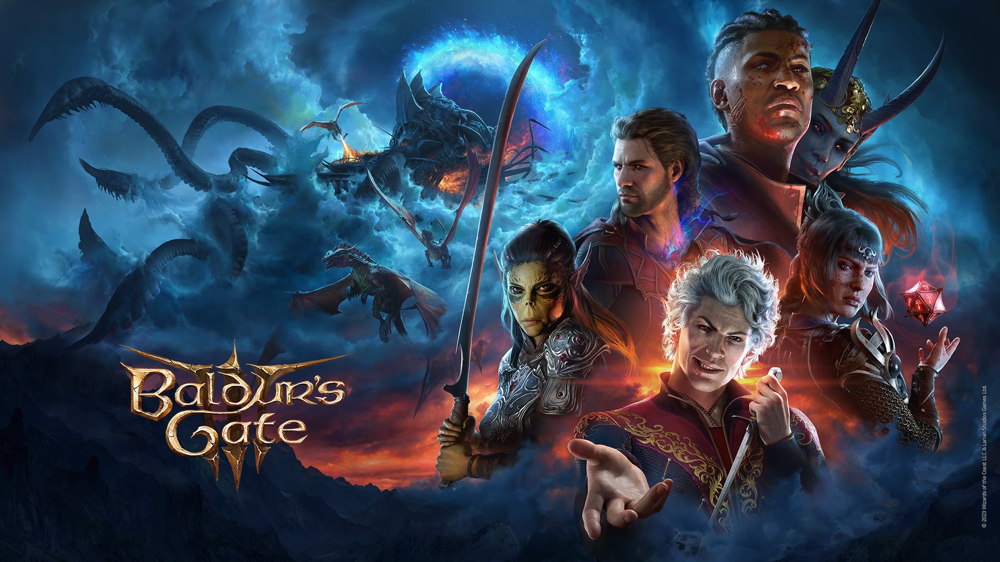
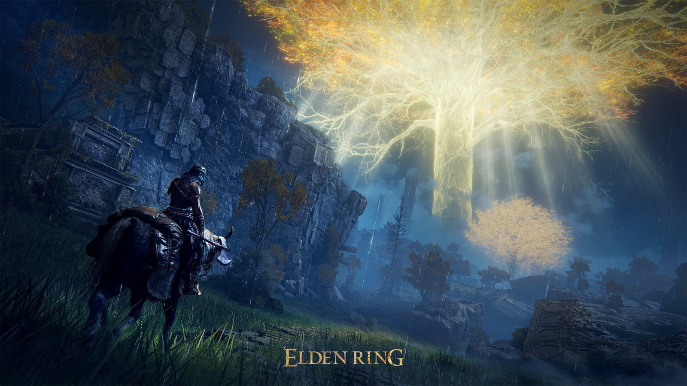
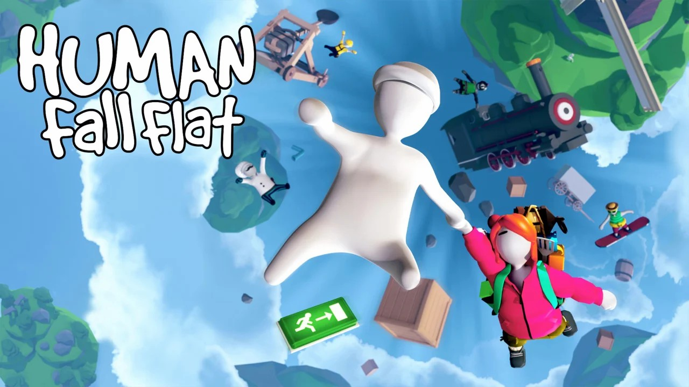
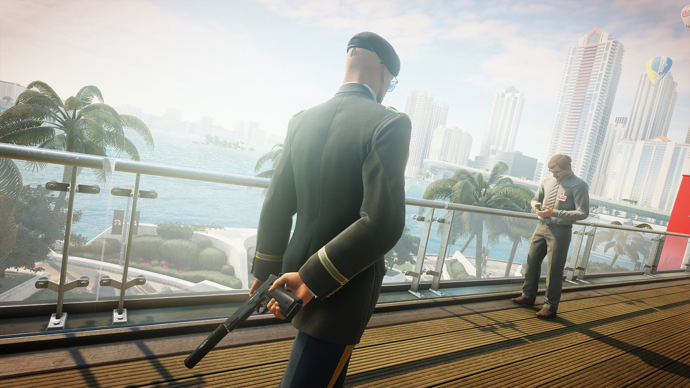

The Three-Body Problem
我们朝黑暗里喊了一声，才听见整片森林早就屏住了呼吸。

Field notes / MMXXVI
01 / Photography
Movement one
Seven frames of branch, bud and blossom, before the season decided what it was going to be.
Movement two
Four frames where the ground opens up and the weather takes over.
Dylan Thomas / A villanelle / 1947
One poem about refusing to go quietly. Written for a father, kept by everyone else, and the reason this page keeps everything bright.
Do not go gentle into that good night,
Old age should burn and rave at close of day;
Rage, rage against the dying of the light.Though wise men at their end know dark is right,
Because their words had forked no lightning they
Do not go gentle into that good night.Good men, the last wave by, crying how bright
Their frail deeds might have danced in a green bay,
Rage, rage against the dying of the light.Wild men who caught and sang the sun in flight,
And learn, too late, they grieved it on its way,
Do not go gentle into that good night.Grave men, near death, who see with blinding sight
Blind eyes could blaze like meteors and be gay,
Rage, rage against the dying of the light.And you, my father, there on the sad height,
Curse, bless, me now with your fierce tears, I pray.
Do not go gentle into that good night.
Rage, rage against the dying of the light.
Dylan Thomas, 1947. Kept here because the light is not something you wait for.
02 / The archive
我们朝黑暗里喊了一声，才听见整片森林早就屏住了呼吸。
太阳太亮了，亮到他连一滴该流的眼泪都挤不出来。
钟楼收留了一个太丑的人，教堂替他挡住了整座城市的眼睛。
日子一件一件从他手里拿走，他一件一件地接着过。
他把一辈子折进一句话里，那句话后来比他活得久。
城里的人想出去，城外的人想进来，墙一直在原地不动。

五个冠军，没有一次是靠喊出来的。

球一直在他们脚下，四座奖杯之后，还在传同一脚球。

木瓜橙用了六十年，车库里的灯从来没熄过。

他们赢球的方式很安静，安静到你能听见撞击声。

一个没人听说过的名字，赢了两次世界冠军。

The dust settles the way it always has, on old angles and steady hands.

The west ends like all good stories: slowly, and on a hill at sunset.

Every alley keeps a story, and the rain only makes the colors louder.

A city learned street by street, with satire sharper than its neon.

Four seasons in one blur. Britain at three hundred per hour, and finally, quiet.

Three cities, three endings; the coin still flips somewhere inside me.

A spreadsheet with a heartbeat. Third tier to Europe, one Sunday at a time.
Same pitch, new numbers. The grass still bends for a well-weighted through ball.

Hesitation is defeat. Everything else is just footwork.

In the Lands Between, dying is a detour, not a defeat.

Every dice roll is a promise the story keeps. Fail beautifully, reload rarely.

The staff remembers every sky it has broken. So do you.

No legs, no plan. Gravity just wants a hug.

The war table is chaos; the squad makes it a story.

Parkour over the day, run from the night. The city bites either way.

Forty-seven ways to vanish. Patience is the loudest one.

Love is a co-op game: you fail together, you fly together.

The clock never lies; the ankle-breaker writes poetry.
03 / About
I shoot the city the way I walk it: slowly, and mostly for the joy of it. Most of these frames were taken on the routes I walk every week, between errands and plans, whenever the light does something worth stopping for.
When I am not outside with a camera, I am inside one of eighteen worlds. The archive above is not a backlog. It is a rotation, and proof that some games simply do not leave you.
Everything here is mine. The frames, the hours, the small joy of keeping both.